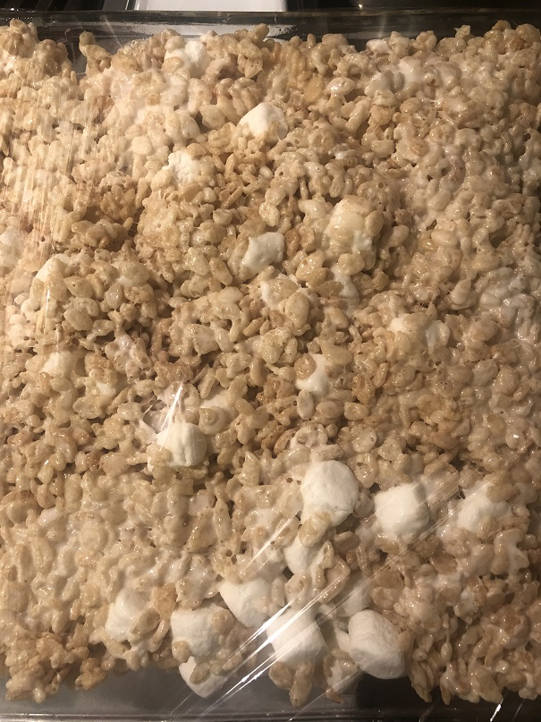

Rice Krispies!

Ingredients
- 5 Tbsp butter
- 10 cups mini marshmallows
- 6 cups Rice Krispies cereal
Directions
- Spray a 9x13in baking pan and spatual with cooking spray
- Heat a large pot over low-heat and slowly add 8 cups of the mini marshmallows, stir continuously with spatual until completley melted
- Remove large pot from burner and add Rice Krispies Cereal to pot of melted mini marshmallows until almost combined
- Add remaining 2 cups of mini marshmallows into the pot and mix until incorporated
- Transfer mixture to baking sheet and press down
- Let cool completely
- Cut into squares or whatever shapes you prefer and enjoy!
See Original Recipe for more information
Contact Me
Email me!
The University of Montana
32 Campus Drive
Missoula, MT 59812